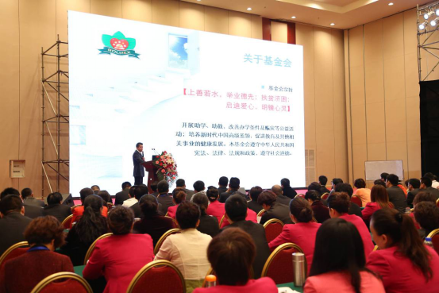
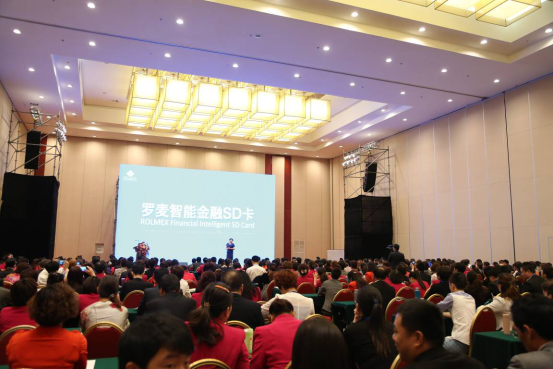
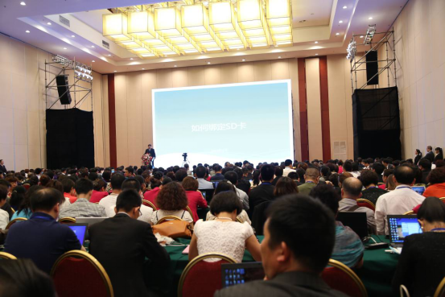

2013年5月13日，品质365电子商务平台介绍暨罗麦智能金融SD卡发布会在北京小汤山九华山庄隆重召开。罗麦科技集团董事长汪静女士；罗麦科技集团副总裁臧权武先生；罗麦科技集团副总裁、罗麦科技总裁郭炳廷先生；罗麦科技集团副总裁、北京易麦通电子商务有限公司董事长汪炜楠先生；罗麦启明公益基金会副理事长陶国林先生；罗麦科技集团副总裁谷峰先生；罗麦科技集团董事长助理安凯先生；罗麦启明公益基金会秘书长周晓萌女士；罗麦科技副总裁刘建华先生；各大区行政总监肖涛先生、白云先生、黄付前先生、王炳坤先生、王棣先生及全国各大区市场总监、分公司经理、来自全国各地近400名高级经销商出席参加了本次会议。
上午8时整，大会在罗麦科技集团董事长汪静女士的讲话中拉开了序幕。董事长汪静女士首先宣布了今年将“启明工程”升格为“罗麦启明公益基金会”。汪静董事长说：“在前面的路途上，有竞争、有斗争、有很多磨难在等着我们，这需要我们在胜利的基础上团结大家，共同前进，为了实现罗麦公司在直销界打造一片净土，为了让每一个经销商都能够成为这个社会上有尊严的人，为了让罗麦事业真正能够实现和谐、奋进、公平、稳健的可持续发展，为了建造一个强大的罗麦，百年的罗麦，让我们共同努力吧！”

罗麦科技集团副总裁谷峰先生在会上为大家介绍“罗麦启明公益基金会”的宗旨、目的、资金来源、组成及启明公益基金后期运作等相关情况。
9时整，大会先后开始进入了罗麦电子商务平台及罗麦智能金融SD卡介绍、发布及演示流程。罗麦SD卡是现代化的信息和高科技发展的必然产物。罗麦SD卡集普通SD卡的存储功能、银联SD卡的金融功能、以及针对罗麦会员的强大服务功能于一体，是专门为罗麦会员定制的基于移动互联网的工作、生活好帮手。
罗麦智能金融SD卡的上市，提升了业务效率，实现了更加快捷、安全、便利的支付功能。

罗麦科技市场部总监周云女士为大家介绍罗麦智能金融SD卡。

SD卡高级技术经理为大家介绍SD卡的技术、优势、运用等相关情况。
品质365电子商务平台技术工程师为大家介绍品质365的服务、功能等相关情况。